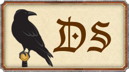

die größe des Farbgitters in die Felder eintragen und danach auf generate drücken.(empfohlen ist 10x10)
durch das klicken auf ein Farbkästchen erfahrt ihr die RGB anteile für eure Kartenmakierungen
diese software ist von Tiggerbär, viel spass beim bashen!!!!
